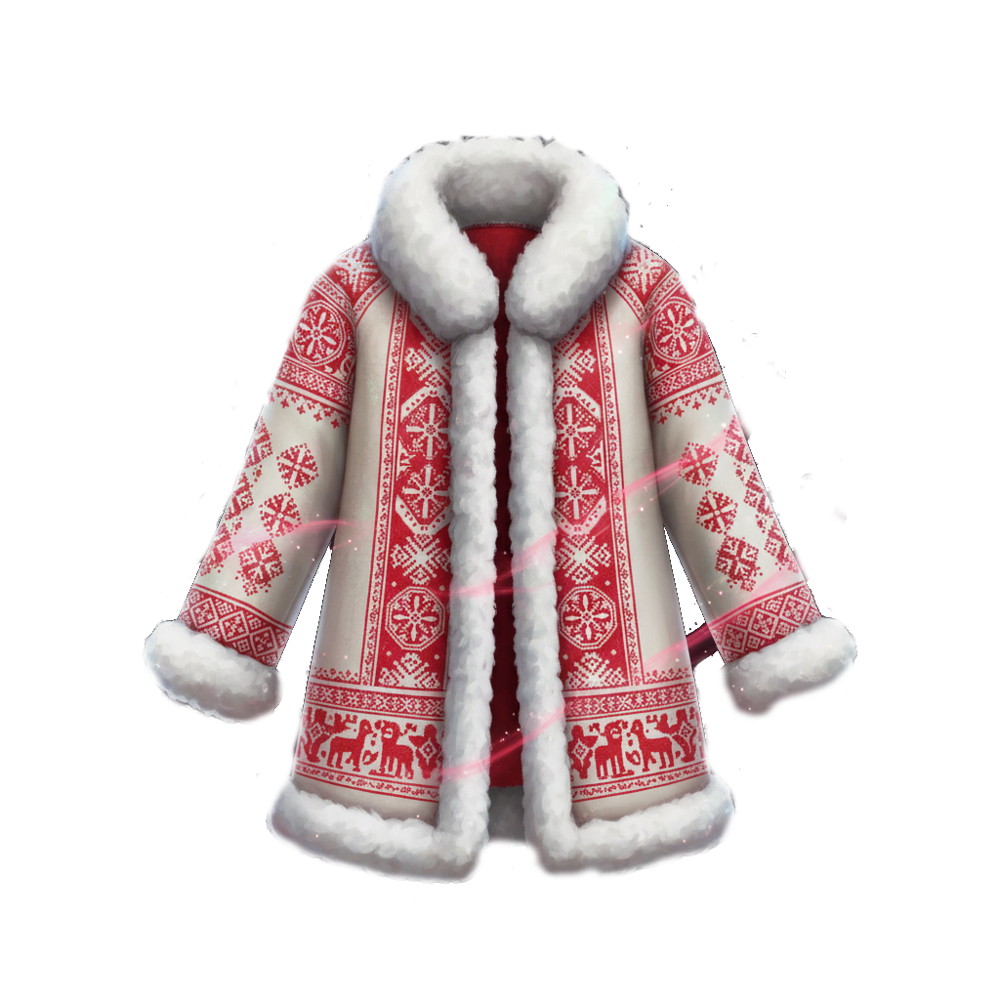

RO
EN
Legenda Dochiei
Baba Dochia pornește urcușul...
Începe călătoria
Înapoi
Vârful a fost atins!

Primăvara a învins iarna.
artmera.wordpress.com
SALVEAZĂ MĂRȚIȘORUL
Reia Legenda
Revenire la Artmera